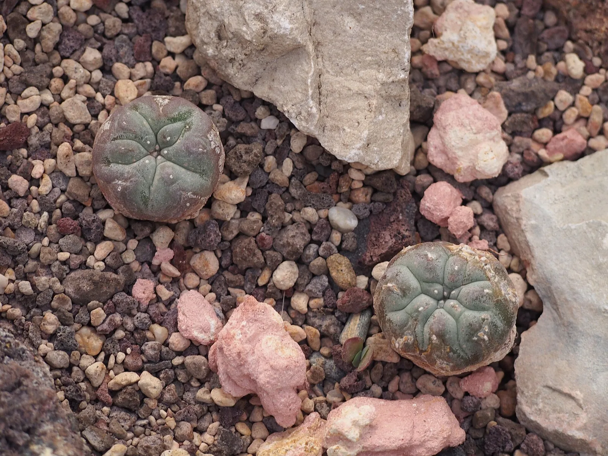
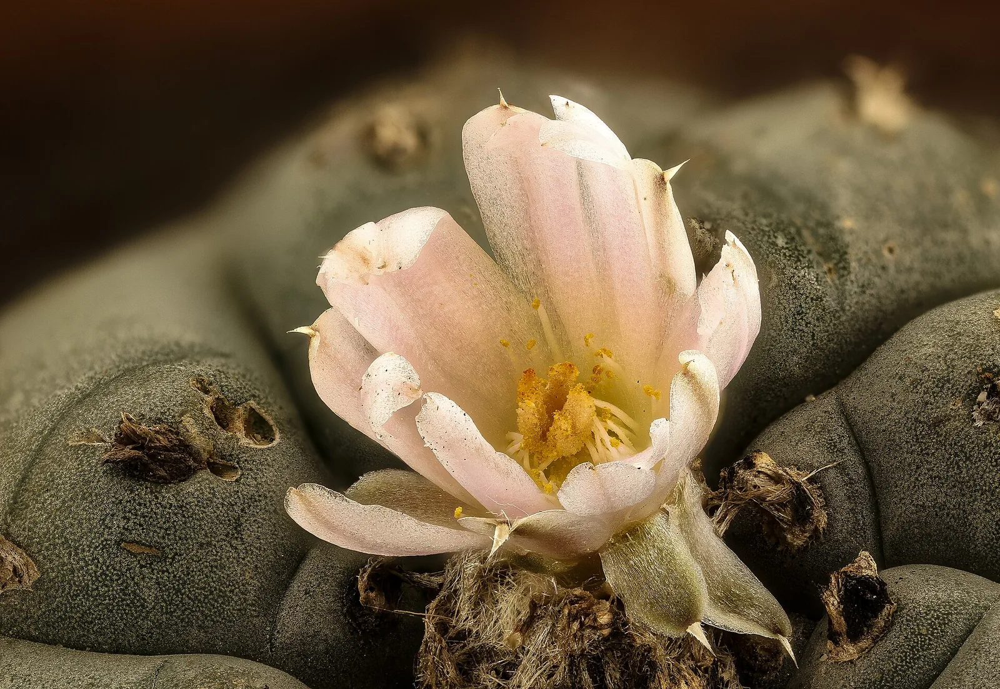

O7 · Oeste
O7 · Westen
O7 · West
Wirikuta
En el desierto de Wirikuta vi un pueblo caminar cientos de kilómetros hasta el lugar donde, dicen, nació el sol. Allí, vi el milagro del Peyote.
In der Wüste von Wirikuta sah ich ein Volk Hunderte von Kilometern gehen, bis zu dem Ort, an dem, so sagt man, die Sonne geboren wurde. Dort sah ich das Wunder des Peyote.
In the desert of Wirikuta I saw a people walk hundreds of kilometres to the place where, they say, the sun was born. There I saw the miracle of the peyote.
Información
Wirikuta es el más importante de los sitios sagrados del pueblo wixárika, en el cuadrante suroriental del Desierto Chihuahuense, al norte del altiplano de San Luis Potosí. El 9 de junio de 2001 el gobierno de San Luis Potosí lo declaró Sitio Sagrado Natural junto con la Ruta Wixárika: 140.211 hectáreas protegidas en siete municipios.
Cada año los wixaritari recorren una ruta ceremonial de unos 550 kilómetros, desde la región del Gran Nayar hasta el desierto potosino. La Ruta Wixárika por los sitios sagrados a Wirikuta fue inscripta en la Lista del Patrimonio Mundial de la UNESCO.
El hikuri —el peyote— es un cactus sagrado que sólo crece silvestre en Wirikuta.
Information
Wirikuta es el más importante de los sitios sagrados del pueblo wixárika, en el cuadrante suroriental del Desierto Chihuahuense, al norte del altiplano de San Luis Potosí. El 9 de junio de 2001 el gobierno de San Luis Potosí lo declaró Sitio Sagrado Natural junto con la Ruta Wixárika: 140.211 hectáreas protegidas en siete municipios.
Cada año los wixaritari recorren una ruta ceremonial de unos 550 kilómetros, desde la región del Gran Nayar hasta el desierto potosino. La Ruta Wixárika por los sitios sagrados a Wirikuta fue inscripta en la Lista del Patrimonio Mundial de la UNESCO.
El hikuri —el peyote— es un cactus sagrado que sólo crece silvestre en Wirikuta.
Information
Wirikuta es el más importante de los sitios sagrados del pueblo wixárika, en el cuadrante suroriental del Desierto Chihuahuense, al norte del altiplano de San Luis Potosí. El 9 de junio de 2001 el gobierno de San Luis Potosí lo declaró Sitio Sagrado Natural junto con la Ruta Wixárika: 140.211 hectáreas protegidas en siete municipios.
Cada año los wixaritari recorren una ruta ceremonial de unos 550 kilómetros, desde la región del Gran Nayar hasta el desierto potosino. La Ruta Wixárika por los sitios sagrados a Wirikuta fue inscripta en la Lista del Patrimonio Mundial de la UNESCO.
El hikuri —el peyote— es un cactus sagrado que sólo crece silvestre en Wirikuta.
En Wirikuta, donde nació el sol, vi minas pedidas sobre la tierra sagrada, y manos arrancando el peyote para venderlo más rápido de lo que tarda en crecer.
In Wirikuta, wo die Sonne geboren wurde, sah ich Minen, beantragt auf heiligem Boden, und Hände, die den Peyote ausreißen, um ihn schneller zu verkaufen, als er wachsen kann.
In Wirikuta, where the sun was born, I saw mines claimed over sacred ground, and hands tearing out the peyote to sell it faster than it takes to grow.
La peregrinación enfrenta hoy varios riesgos a la vez: el avance de proyectos agrícolas e industriales, el saqueo de las ofrendas ceremoniales, la disminución del peyote en el desierto potosino y las concesiones mineras otorgadas sobre la región de Wirikuta. Esos riesgos son parte de lo que motivó la postulación del sitio ante la UNESCO.
La peregrinación enfrenta hoy varios riesgos a la vez: el avance de proyectos agrícolas e industriales, el saqueo de las ofrendas ceremoniales, la disminución del peyote en el desierto potosino y las concesiones mineras otorgadas sobre la región de Wirikuta. Esos riesgos son parte de lo que motivó la postulación del sitio ante la UNESCO.
La peregrinación enfrenta hoy varios riesgos a la vez: el avance de proyectos agrícolas e industriales, el saqueo de las ofrendas ceremoniales, la disminución del peyote en el desierto potosino y las concesiones mineras otorgadas sobre la región de Wirikuta. Esos riesgos son parte de lo que motivó la postulación del sitio ante la UNESCO.
Galería
Galerie
Gallery


Fuentes
Quellen
Sources
- Instituto Nacional de Antropología e Historia (INAH), México, La Ruta wixárika por los sitios sagrados a Wirikuta es inscrita en la Lista de Patrimonio Mundial de la UNESCO — https://www.inah.gob.mx//boletines/la-ruta-wixarika-por-los-sitios-sagrados-a-wirikuta-es-inscrita-en-la-lista-de-patrimonio-mundial-de-la-unesco consultado 2026-10-06abgerufen 2026-10-06accessed 2026-10-06
- Instituto Nacional de los Pueblos Indígenas (INPI), México, Plan de manejo del sitio sagrado natural Wirikuta (PDF) — https://www.inpi.gob.mx/plan-winaodme/docs/plan-de-manejo-del-sitio-sagrado-natural-wirikuta-enero-2008-.pdf consultado 2026-10-06abgerufen 2026-10-06accessed 2026-10-06